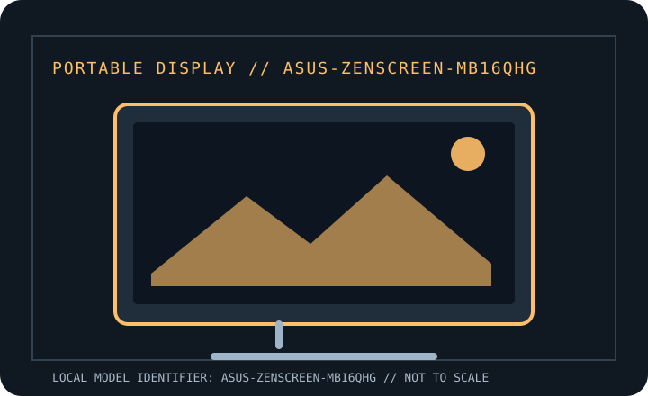

[ INDIVIDUAL COMPONENT // DISPLAYS ]
ASUS ZenScreen MB16QHG
Manufacturer-specific portable monitor record. Verify the full rear-label SKU, region and documentation revision before connecting power or relying on a maximum mode.

IDENTIFICATION: Portable computer monitor SKU with a unique model record. Match the rear label and regional suffix to the manufacturer's product page/manual; similarly named models may use different ports or power behavior.
Specifications
| Catalog subcategory | Portable displays |
|---|---|
| Exact product / family | ASUS ZenScreen MB16QHG |
| Panel / diagonal | 16-inch IPS LCD |
| Native resolution | 2560 × 1600 (WQXGA, 16:10) |
| Native refresh / maximum | 120 Hz maximum |
| Brightness (typical) | 500 cd/m² typical |
| USB-C interface | Two USB-C ports supporting DisplayPort Alt Mode video and USB-C power input; treat the USB-C power rating as monitor input, not laptop charging pass-through. |
| HDMI interface | One HDMI 2.0 input. HDMI video requires a separate compatible USB-C power connection. |
| Power / USB Power Delivery | Powered over USB-C or supplied adapter; typical draw is under 13 W. ASUS specifications do not establish laptop power pass-through; do not infer it from USB-C alone. |
| OSD / controls | Onboard controls/OSD; image settings remain available without a host utility. Auto-rotation utility support is OS/version dependent. |
| Stand / mounting | Integrated L-shaped kickstand with adjustable tilt and a 1/4-inch tripod socket; protective sleeve is not a VESA stand. |
Host, OSD & compatibility notes
USB-C video requires DisplayPort Alt Mode. HDMI supports compatible HDMI sources at supported timing, with separate USB-C power. Rotation/software features may be limited to supported Windows configurations; standard display modes are host/GPU dependent.
Model-specific caveat: 2560 × 1600 at 120 Hz requires a source and cable capable of the full timing; HDR and refresh options depend on host output and link configuration. No laptop-charging passthrough should be assumed.
Field use & preservation
Protect the LCD/touch surface in transport, avoid loading the USB-C or HDMI sockets sideways, and test video, power and touch (where fitted) as separate signal paths. Keep the correct cable and power adapter with the monitor.
Record the rear-label model/serial, included cover/stand, cable and adapter ratings, signal timing, OSD configuration, panel condition and any repaired or substituted accessories. Do not open the enclosure; use the manufacturer's service procedure and a qualified technician.
Manufacturer documentation & sources
- ASUS — MB16QHG technical specificationsManufacturer specifications for panel, native resolution, luminance, refresh and interfaces.
- ASUS — MB16QHG manuals and downloadsOfficial manual/download listing; verify exact regional model before applying setup details.